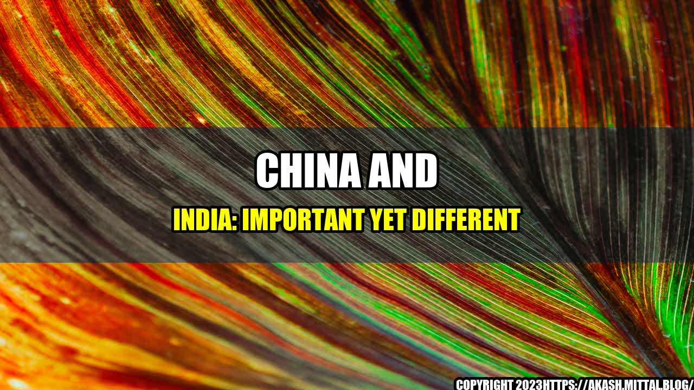

China and India: Important Yet Different

Once upon a time, there were two great civilizations, China and India. They were both rich in history, culture, and tradition. They both had a deep love for their lands and people. However, despite their similarities, these two mammoth nations are very different from each other.
China is the world's most populous country, with over 1.4 billion people, while India comes in second with just over 1.3 billion. Both countries are growing rapidly, but China's economy is already larger and more developed than India's.
To illustrate the differences between the two nations, let's take a look at some quantifiable examples:
- GDP: China's GDP in 2020 was $14.3 trillion, while India's was $2.9 trillion.
- Internet penetration: China's internet penetration rate in 2020 was 64.5%, while India's was only 34.5%.
- Life expectancy: The average life expectancy in China is 76 years, while India's is 69 years.
- Military: China has the largest standing army in the world, with 2.2 million active personnel, while India has 1.4 million active personnel.
- Education: China's literacy rate is 96.4%, while India's is 70.3%.
China and India: A Tale of Two Titans
- Incredible economic growth: Both China and India are experiencing rapid economic growth, but China has already surpassed India in terms of its overall economy.
- Differences in culture and traditions: Although both countries share a long history and tradition, their cultures and customs are vastly different from each other.
- Global impact: With their large populations and growing importance in the global economy, both China and India will continue to play a significant role in shaping the world's political and economic landscape.
and Case Studies
One example of the differences between China and India comes from the experiences of entrepreneurs in each country. In China, entrepreneurs are often heavily supported by the government and have access to large amounts of funding. In India, however, the entrepreneurial landscape is much more challenging, with limited access to funding and a more bureaucratic government system.
Another example comes from the two countries' approaches to healthcare. China has implemented a universal healthcare system that covers over 95% of its population, while India's healthcare system is much more fragmented and leaves many people without access to basic medical services.
Practical Tips
- To do business in either China or India, it's important to take the time to learn about the local culture and customs.
- When visiting China or India, it's important to respect local traditions and practices.
- To succeed in India's entrepreneurial landscape, it's important to have a strong network of local contacts and to work closely with the government.
References and Hashtags
References:
Hashtags:
- #China #India #Economy #Culture #Politics #Entrepreneurship #Healthcare
SEO Keywords: China, India, Economy, Culture, Politics, Entrepreneurship, Healthcare, Differences, Similarities, Population, GDP
Article Category: Business and World Affairs
Curated by Team Akash.Mittal.Blog
Share on Twitter Share on LinkedIn